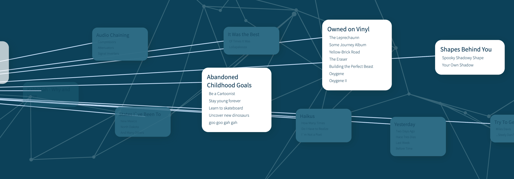

Client work / Presentation infrastructure
Animated Presentation
A configurable presentation for a wall of 30 screens, synchronized across two computers.

Project overview
I partnered with a designer to build a web presentation for the screen wall near the client’s sales room and helped install it at their headquarters.
The demo uses placeholder copy to protect the client’s identity.
Tools React, Typescript, WebSockets, GreenSock Animation Platform
UI Animation

- I built a custom sequencing/animation framework that used React and the GreenSock Animation Platform (GSAP). It made it easier to orchestrate long sequences of animations, and schedule UI changes.
- I generated animations procedurally and tuned easing curves, fade timing, and timeline data structures for browser playback.
- I used linear algebra to project rotating 3D graphs into 2D SVG. A coworker called the effect “magic,” which was a proud moment for me.
Ingenuity

- The team had built packaged presentations and web apps before. This project called for both in the same experience.
- I built React animation prototypes, including a procedural graph, to test whether the browser could deliver the motion we needed.
- I built a configuration interface so the client could tailor imagery and presentation sections to different audiences.
Problem Solving Under Pressure

- At installation, I discovered that two computers drove the wall, one for each half. I added URL parameters to offset the viewport so each instance rendered its half of the same presentation.
- I synchronized the two instances over WebSockets so each could adjust its playback position against the other.
- A problem related to that was that some of the animated graph nodes were supposed to wobble around randomly - but with the presentation split into two computers, the random wobbles would be generated differently on each instance and the illusion would be broken. To remedy this, I re-implemented all randomness logic to use a psuedo-random number generator. This allowed you to seed each instance to generate the exact same "random" numbers, no matter how many numbers you needed.